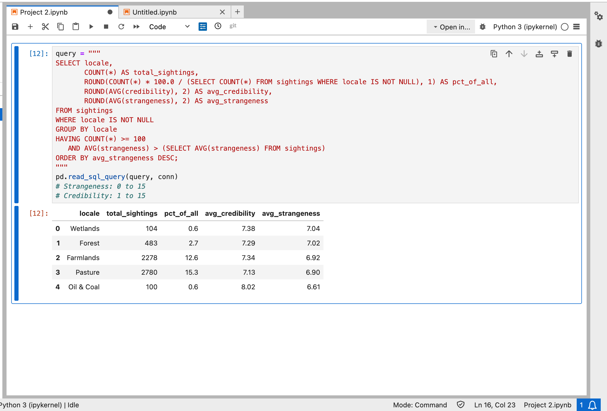

Lesly Godinez

Student | Based in Colorado
Student | Based in Colorado
I’m an Information Science student at the University of Colorado Boulder with a passion for technology, data, and problem-solving. I’m interested in opportunities where I can apply my skills in data collection, data visualization, SQL, and programming to turn information into meaningful insights. I’m constantly aiming to grow my technical skills and gain meaningful experience working with data in a real-world setting.
SQL, Python, HTML, CSS, JavaScript, Git, Critical Thinking, Problem Solving, Bilingual, Equity and Inclusion, Adaptable, Active Listener, Creative
Used SQL to group UFO sightings into four time periods and compare how many there were, how strange they were rated (0 to 15), and how long they lasted.
Tools: SQL, SQLite, Python, pandas

| Era | Sightings | Avg strangeness | Avg duration |
|---|---|---|---|
| Before 1900 | 214 | 6.09 | 29.0 |
| 1900-1949 | 1,255 | 6.34 | 11.7 |
| 1950-1979 | 12,373 | 6.64 | 17.4 |
| 1980 and later | 4,274 | 6.57 | 19.0 |
Used SQL to find which types of locations have above-average strangeness ratings, keeping only locations with at least 100 sightings so small samples don't skew the results.
Tools: SQL, SQLite, Python, pandas

| Locale | Sightings | % of all | Avg credibility | Avg strangeness |
|---|---|---|---|---|
| Wetlands | 104 | 0.6 | 7.38 | 7.04 |
| Forest | 483 | 2.7 | 7.29 | 7.02 |
| Farmlands | 2,278 | 12.6 | 7.34 | 6.92 |
| Pasture | 2,780 | 15.3 | 7.13 | 6.90 |
| Oil & Coal | 100 | 0.6 | 8.02 | 6.61 |
Email: lego9617@colorado.edu